/* sara-cwynar - proofs */
12 plates. Deterministic overlays rendered by the composition-analysis skill.
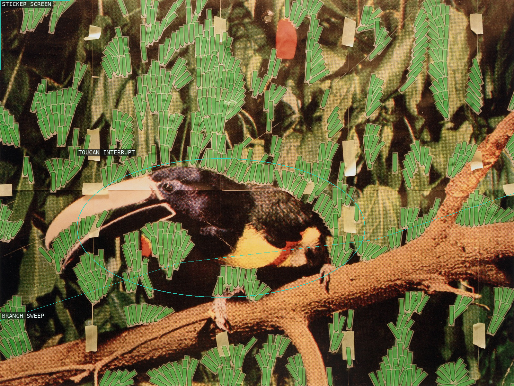
01-toucan-in-nature-post-it-notes
A dense screen of green stickers crosses a reproduced bird and branch.
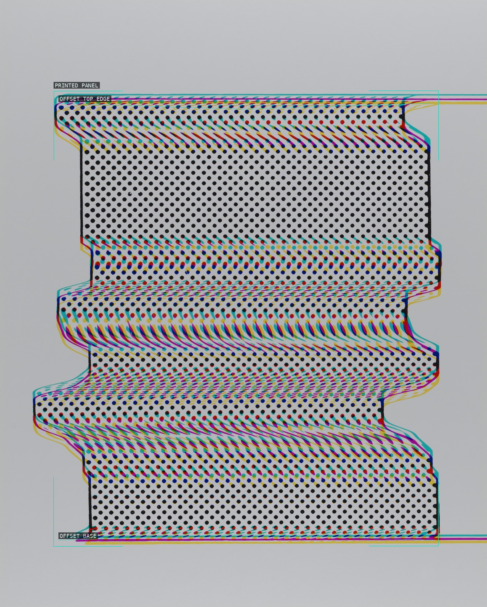
02-print-test-panel-darkroom-manuals
Misregistered color outlines make the printed panel appear to shift against itself.
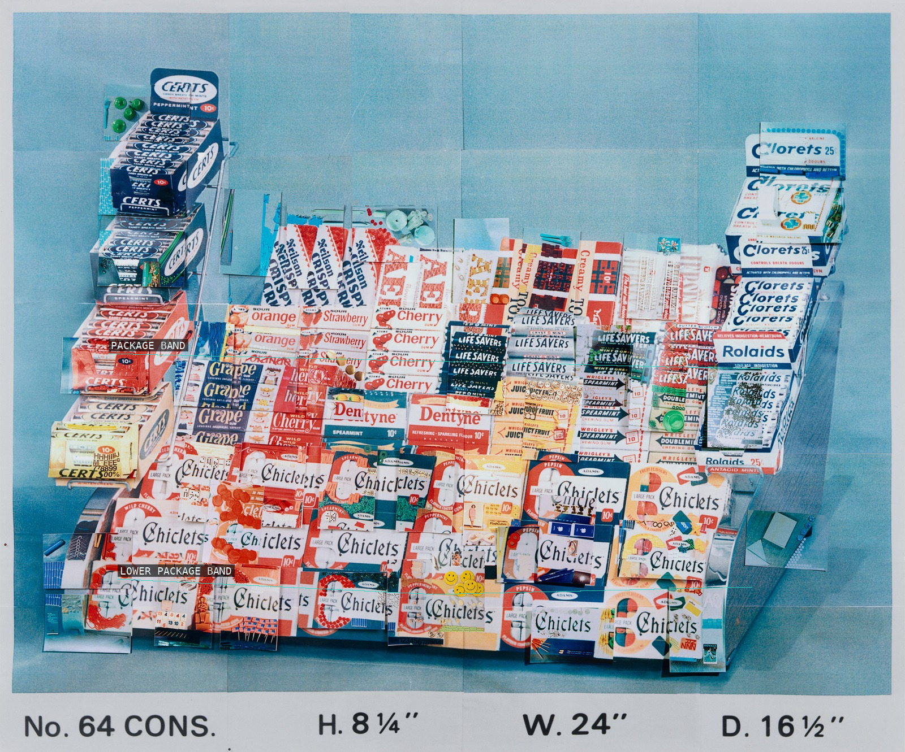
03-display-stand-no-64
Two package rows establish the retail fixture's shallow, catalogue-like stacking.
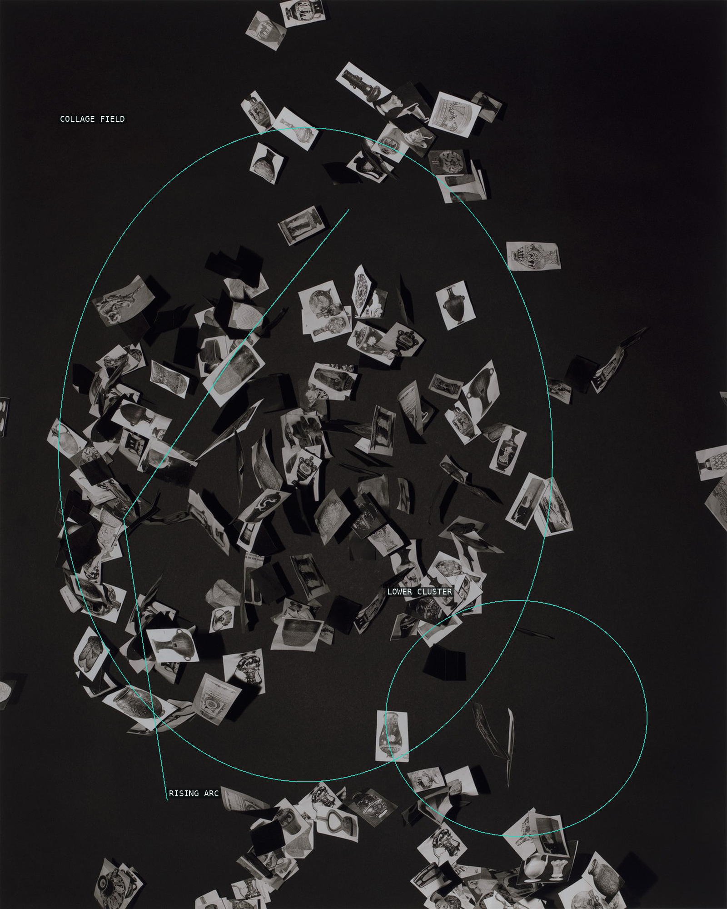
04-vases-encyclopedia-pictures
Small picture fragments collect into two suspended clusters over a black field.
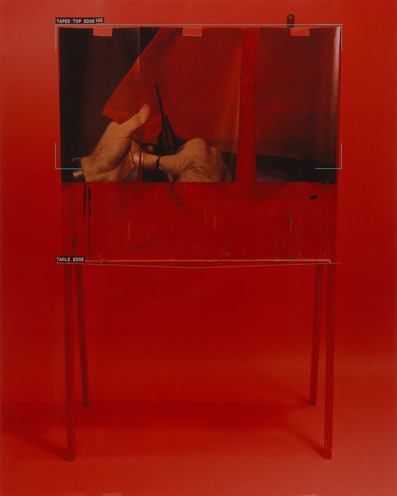
05-cut-picturing-times-of-your-life
A red room is held between a taped photographic strip and a thin table edge.
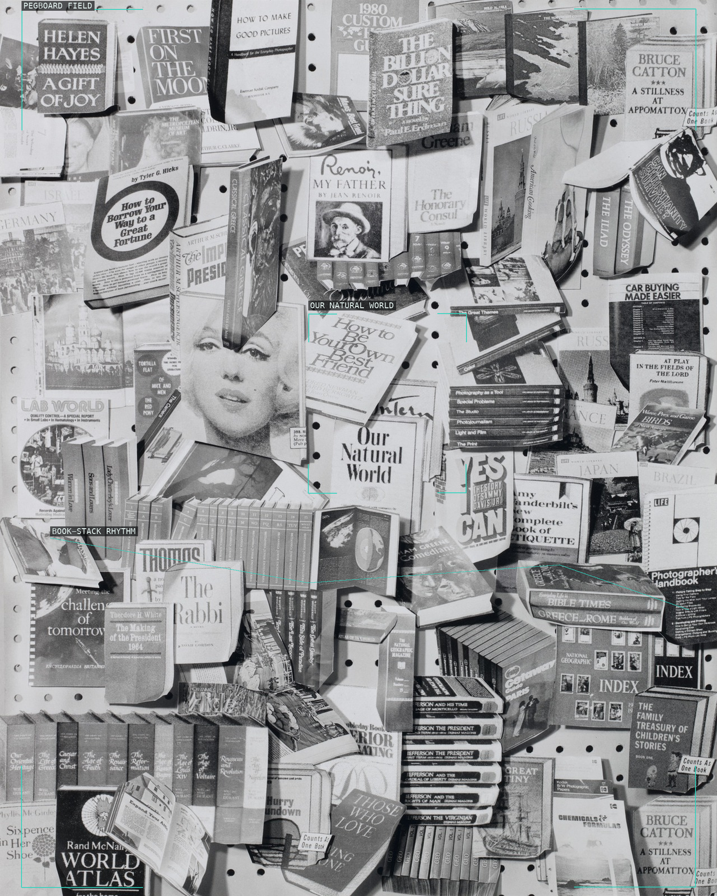
06-our-natural-world-books-1
A pegboard grid receives a dense, uneven stack of printed books and clippings.
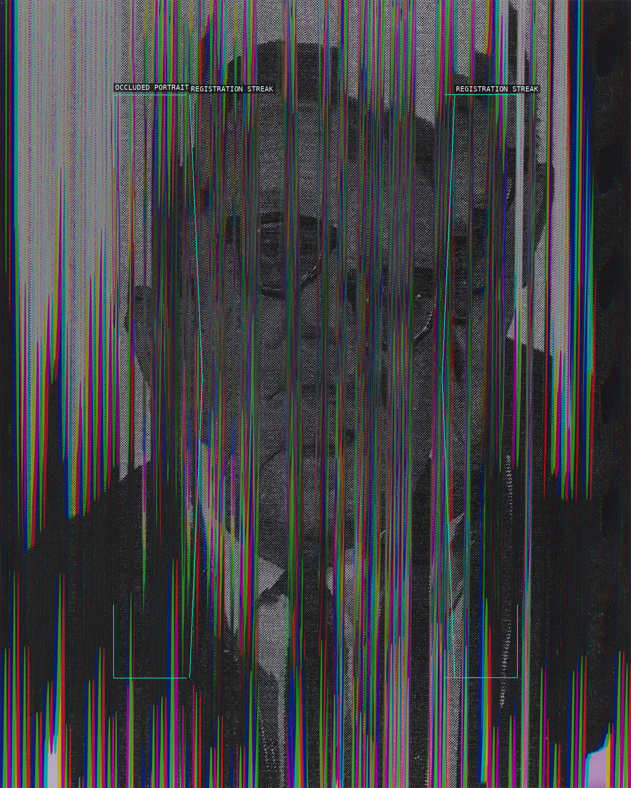
07-man-from-contact-sheet-2
Vertical color streaks turn a centered portrait into a procedural screen.
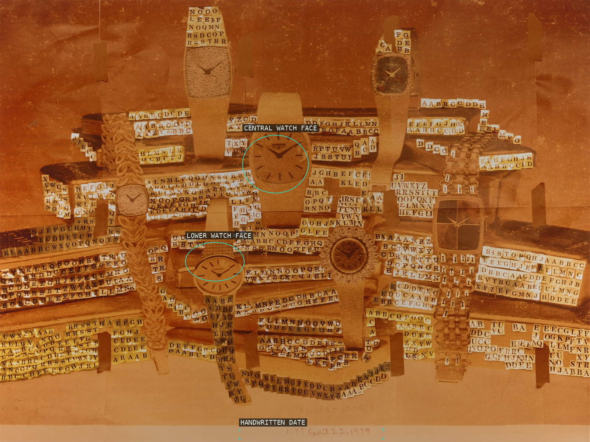
08-gold-nyt-april-22-1979
Watch faces punctuate the frontal gold-toned collage, ending on its handwritten date.
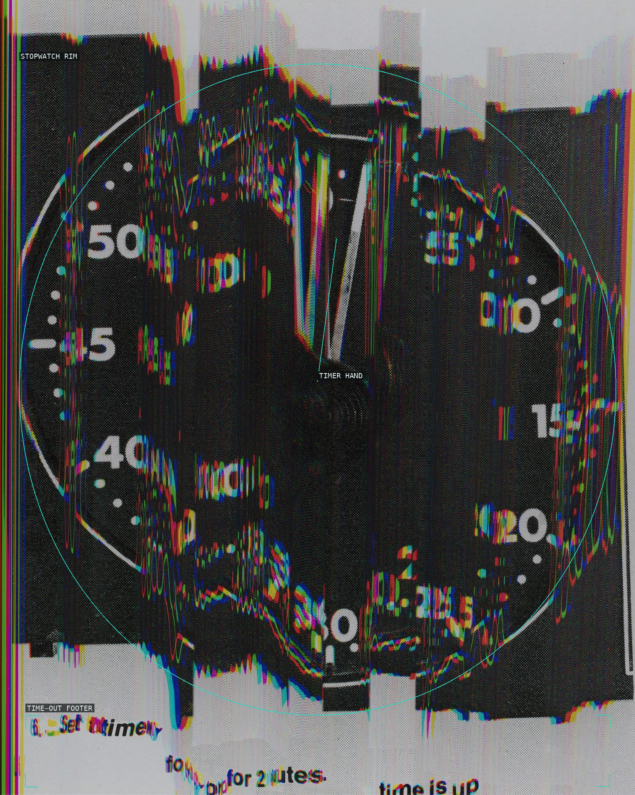
09-time-is-up-2
A stopwatch rim and hand are interrupted by registration smears and a text-bearing footer.
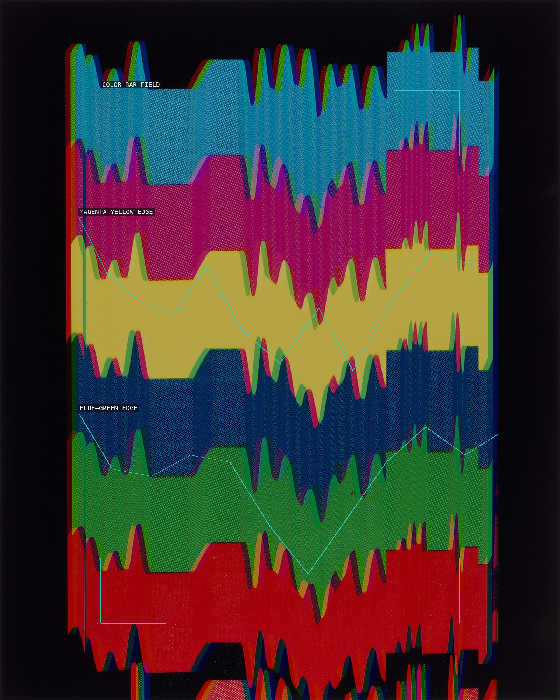
10-color-bars-2
A vertical technical-test field is held by black margins and vibrating color-band edges.
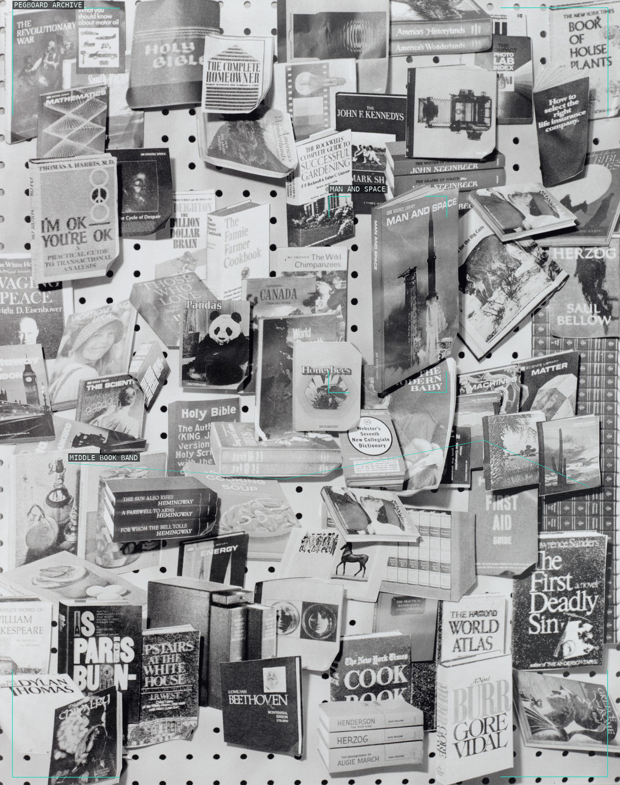
11-man-and-space-books-2
The pegboard's literal grid counters an all-over archive of overlapping books.
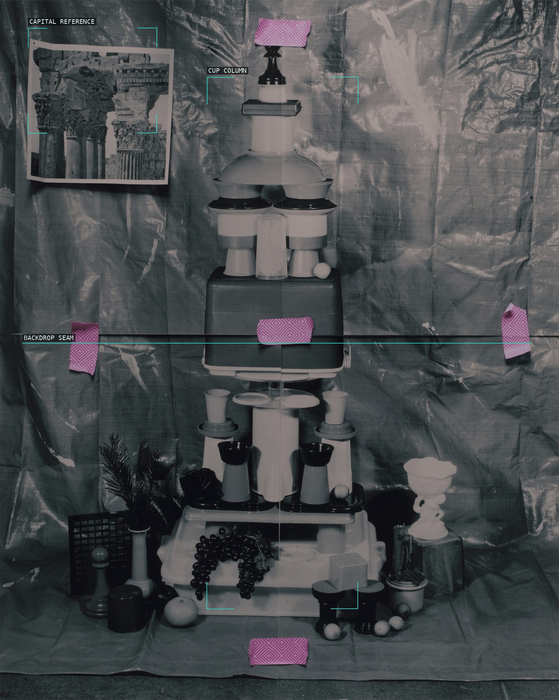
12-corinthian-column-plastic-cups
A central column of disposable vessels meets a backdrop seam and an off-axis classical reference.